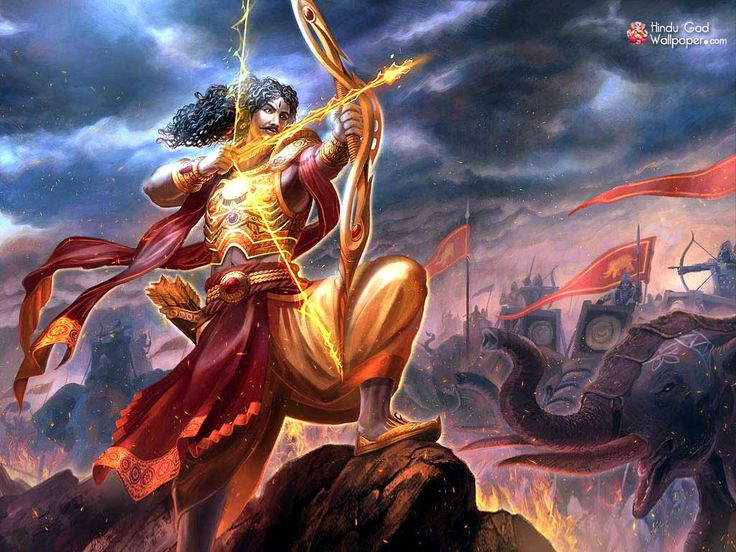

Angaraj Karna

कर्ण महाभारत के महानायक है। वेदव्यास द्वारा रचित महाभारत कर्ण और पांडवों के जीवन पर केन्द्रित है| जीवन अंतत विचार जनक है। कर्ण महाभारत के सर्वश्रेष्ठ धनुर्धारियों में से एक थे। कर्ण छ: पांडवों में सबसे बड़े भाई थे ।
Angaraj Karna is a mythological novel about Karna, he most tragic figure in the Mahabharata. Her Karna is different, not a cry-baby, not crushed by the irony of fate he is a victim of.